앤트로픽 Marketing 플러그인
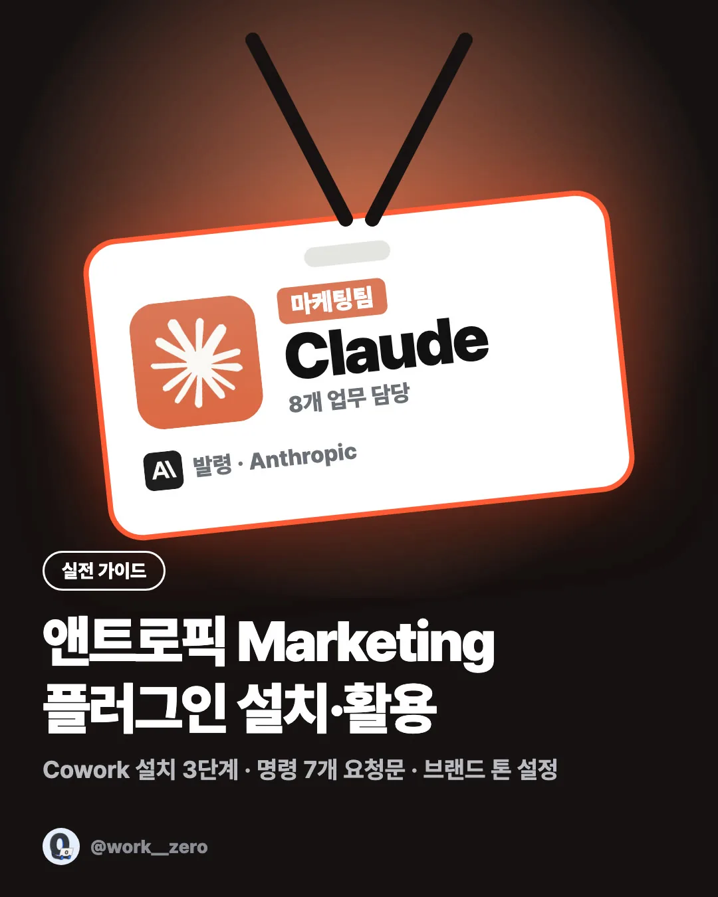
30초 요약
- Marketing 플러그인은 Anthropic이 직접 만든 마케팅용 플러그인이에요. 스킬 8개가 들어 있고, 그중 7개는
/로 바로 부르는 명령이에요. - Cowork에서 플러그인 하나만 추가하면 설치가 끝나요. 따로 코드를 칠 필요가 없어요.
- 브랜드 톤을 한 번 알려 두면 초안 쓰기와 검수에 그 기준이 들어가요. 아래에 바로 붙여 쓰는 요청문을 명령별로 정리했어요.
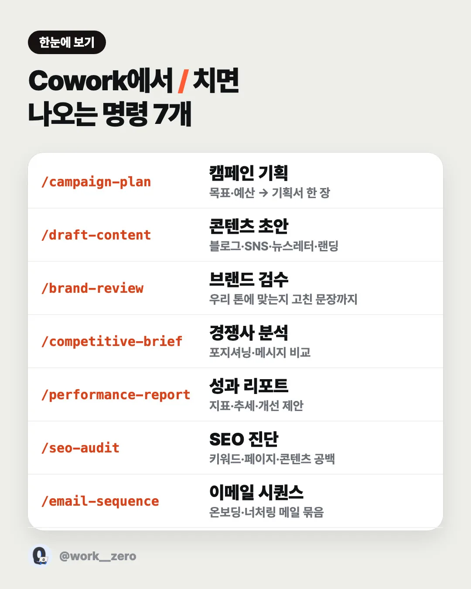
| 명령 | 하는 일 | 이럴 때 |
|---|---|---|
/campaign-plan | 목표·타깃·채널·주차별 캘린더·성과 지표가 들어간 캠페인 기획서 | 신규 런칭, 리드 모으기, 시즌 캠페인 |
/draft-content | 블로그·SNS·뉴스레터·랜딩페이지·보도자료 초안 | 채널별로 글을 빠르게 뽑을 때 |
/brand-review | 우리 브랜드 톤·용어·메시지에 맞는지 검수, 고친 문장까지 | 발행 직전 최종 확인 |
/competitive-brief | 경쟁사 포지셔닝·메시지 비교, 우리가 비어 있는 자리 | 경쟁사가 움직였을 때, 세일즈 자료 |
/performance-report | 지표·추세·개선 제안이 들어간 성과 리포트 | 주간·월간 보고 |
/seo-audit | 키워드·페이지·콘텐츠 공백·기술 점검 | 블로그·랜딩 검색 유입 점검 |
/email-sequence | 온보딩·너처링·드립 메일 여러 통 | 리드마그넷 이후 후속 메일 |
1. Marketing 플러그인이 뭐예요?
클로드에게 마케팅 일을 시키면 매번 "기획서는 이런 구성으로, 톤은 이렇게"를 설명해야 했죠. Marketing 플러그인은 그 설명을 미리 넣어 둔 묶음이에요. 기획서·초안·검수·경쟁사 분석 같은 마케터 업무마다 어떤 순서로, 어떤 항목을 채워야 하는지가 스킬로 들어 있어요.
- 만든 곳: Anthropic (claude.ai 플러그인 화면 "Anthropic 작성", 버전 1.2.0)
- 구성: 스킬 8개 — 그중 7개는
/명령, 1개(content-creation, 채널별 글쓰기 가이드)는 필요할 때 자동으로 쓰여요 - 연결할 수 있는 도구: Slack, Canva, Figma, HubSpot, Notion, Ahrefs, Similarweb, Klaviyo 등
- 라이선스: Apache-2.0 (GitHub
anthropics/knowledge-work-plugins)
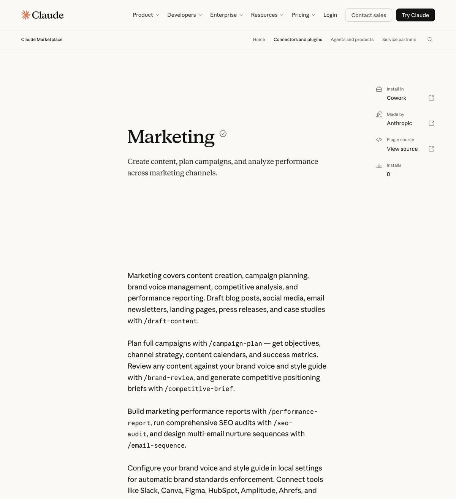
2. 준비물
필요한 것
- 유료 Claude 플랜 (Pro, Max, Team, Enterprise) — 플러그인과 Cowork 모두 유료 플랜에서 쓸 수 있어요
- Cowork: Claude 데스크톱(macOS·Windows) 또는 claude.ai 웹(beta, Pro·Max·Team)
- Enterprise는 관리자가 허용해야 웹·모바일 Cowork를 쓸 수 있어요
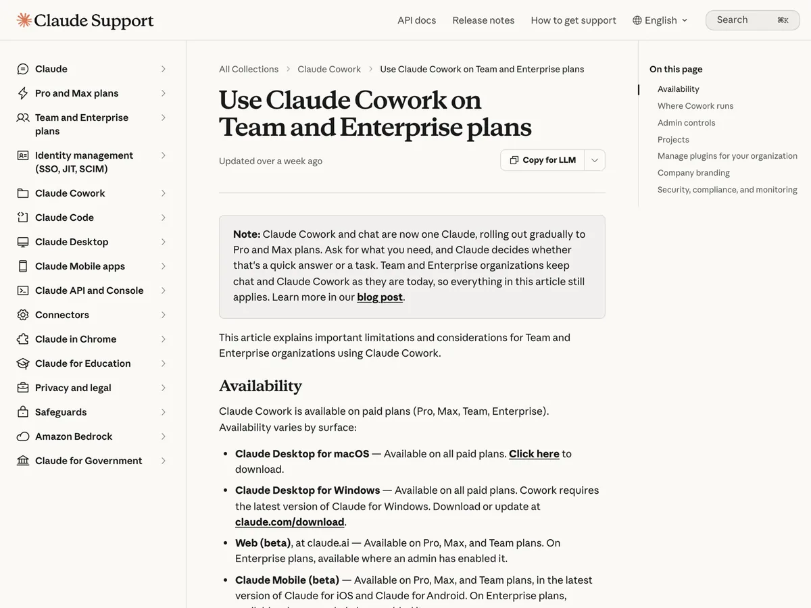
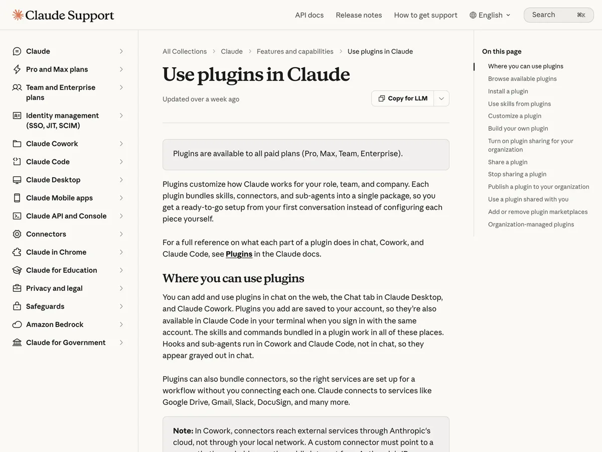
3. 설치 3단계 (Cowork)
- claude.ai(또는 데스크톱 앱)에서 사용자 지정 → 스킬 → 탐색으로 들어가요.
- Marketing(제작: Anthropic) 카드의 + 를 눌러요.
- 오른쪽 위 토글이 켜지고 "Marketing이(가) 설치되어 사용할 수 있습니다."가 뜨면 끝이에요. Cowork에서 사용해 보기를 누르면 바로 Cowork 화면으로 가요.
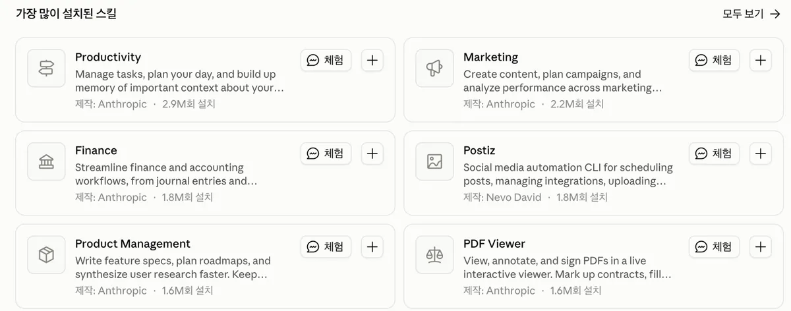
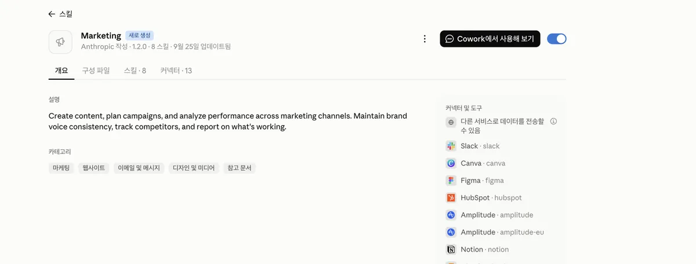
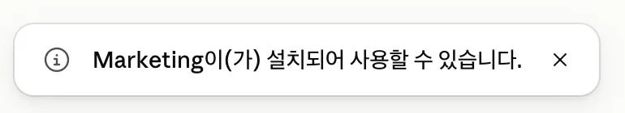
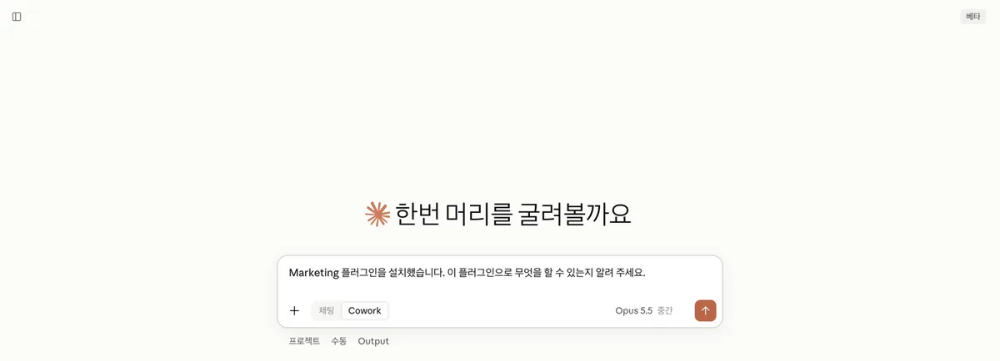
설치가 잘 됐는지는 Cowork 입력창에 / 한 글자만 쳐 보면 알 수 있어요. 목록 아래쪽 Marketing 구역에 명령 7개가 보이면 성공이에요.
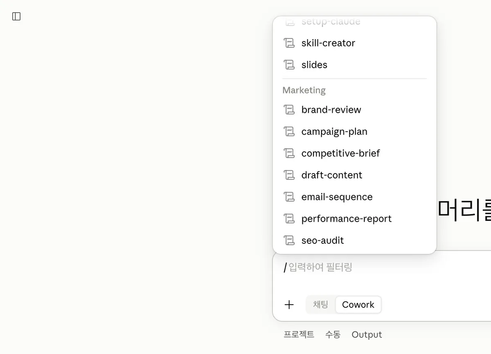
Claude Code를 쓴다면 같은 플러그인을 터미널에서도 설치할 수 있어요. claude.ai에서 추가한 플러그인은 같은 계정으로 로그인한 Claude Code에서도 쓸 수 있어요.
claude plugin marketplace add anthropics/knowledge-work-plugins
claude plugin install marketing@knowledge-work-plugins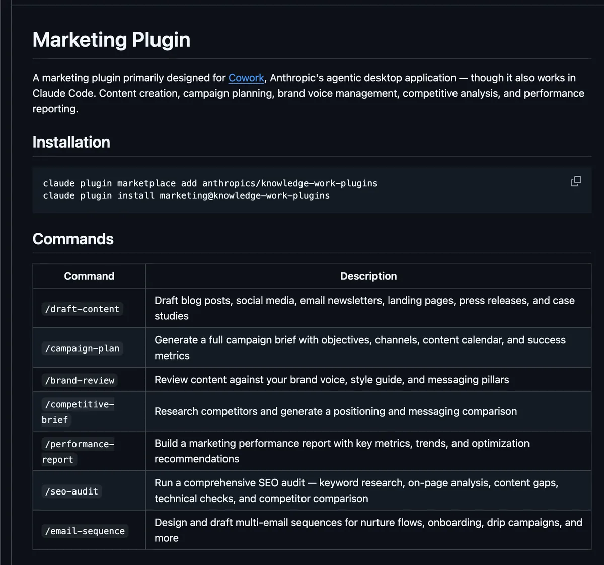
4. 브랜드 톤 한 번 설정하기
README에 따르면 브랜드 톤·스타일 가이드·타깃 페르소나를 설정해 두면 /draft-content와 /brand-review가 매번 묻지 않고 그 기준을 적용해요. 설정이 없을 때는 스킬이 먼저 "브랜드 가이드가 있나요?" 하고 물어보고, 없으면 일반적인 톤으로 써요.
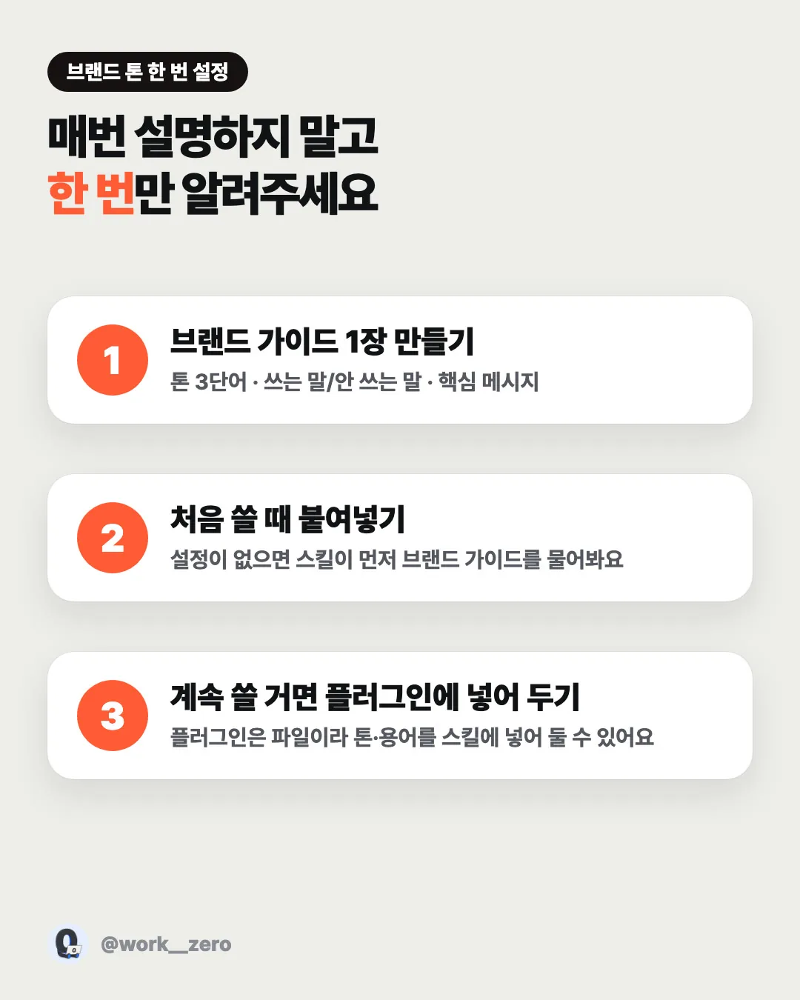
정직한 메모 공식 문서에는 "로컬 설정 파일에 넣는다"고만 나오고, Cowork 안에서 그 파일의 정확한 위치는 나와 있지 않아요. 그래서 확실한 두 가지 방법을 안내해요.
- 처음 쓸 때 아래 브랜드 가이드를 붙여넣기 (스킬이 직접 물어보는 방식이라 확실해요)
- 계속 쓸 거라면 플러그인을 우리 회사용으로 고쳐 두기 (플러그인은 파일 기반이라 톤·용어를 스킬에 넣을 수 있어요 — README "Making Them Yours")
브랜드 가이드 만들기 요청문 (Cowork에 그대로 붙여넣기)
우리 브랜드 가이드를 한 장으로 정리해줘. 아래 정보로 시작하고 빈 곳은 질문해줘.
- 브랜드/서비스: (예: 클로드 업무 자동화를 알려주는 인스타그램 계정)
- 타깃: (예: 클로드를 업무에 쓰는 국내 마케터)
- 톤 3단어: (예: 친절한, 짧은, 실용적인)
- 쓰는 말 / 안 쓰는 말: (예: "~예요" 사용 / "엄청난, 혁신적인" 같은 과장어 금지)
- 핵심 메시지 3개:
- 잘 쓴 예시 문장 2개:
결과는 /draft-content 와 /brand-review 에 그대로 붙일 수 있게 항목별 목록으로.5. 명령별 바로 쓰는 요청문
/campaign-plan — 캠페인 기획서
목표, 타깃, 기간은 꼭 넣어 주세요. 빠지면 스킬이 먼저 물어봐요. 예산과 채널을 넣으면 예산 배분과 채널 전략까지 나와요.
/campaign-plan
목표: 신제품 런칭 4주 동안 무료 체험 신청 늘리기
타깃: 30대 직장인, 퇴근 후 자기계발에 관심 많은 사람
기간: 4주
예산: 300만 원
채널: 인스타그램 릴스, 네이버 블로그, 카카오 채널
한국어로 작성해줘./campaign-plan
이번 시즌 프로모션 기획서를 써줘. 지난 캠페인 결과는 아래 붙인 표를 참고해.
목표: 재구매율 올리기 / 타깃: 최근 6개월 구매 고객 / 기간: 3주
(지난 캠페인 결과 표 붙여넣기)/draft-content — 콘텐츠 초안
/draft-content
유형: 인스타그램 캐러셀 문구 (7장)
주제: 클로드로 주간 보고서 쓰는 법
타깃: 보고서 쓰는 데 시간이 오래 걸리는 주니어 마케터
핵심 메시지: 데이터만 붙이면 초안은 클로드가, 판단은 사람이
톤: 친절하고 짧게/draft-content
위 캠페인 기획서의 1주차 콘텐츠를 채널별로 초안 써줘. 블로그 1편, 릴스 대본 2개, 카카오 채널 메시지 1개./brand-review — 브랜드 검수
/brand-review
아래 광고 카피를 우리 브랜드 가이드 기준으로 검수해줘. 심각도별로 나누고, 고친 문장도 같이 줘.
(브랜드 가이드 붙여넣기)
(검수할 카피 붙여넣기)/brand-review
이번 주 발행할 게시물 3개를 한꺼번에 검수해줘. 과장 표현, 근거 없는 주장, 빠진 고지 문구가 있으면 표시해줘./competitive-brief — 경쟁사 분석
/competitive-brief
경쟁사: A사, B사
우리: 클로드 업무 자동화 교육 계정, 타깃은 국내 마케터
각자 어떤 메시지로 포지셔닝하고 있는지 비교하고, 아무도 말하지 않는 빈자리를 3개 찾아줘./performance-report — 성과 리포트
/performance-report
지난주 인스타그램 성과를 리포트로 만들어줘. 아래 표가 데이터야.
핵심 지표 3개, 잘된 콘텐츠와 이유, 다음 주에 바꿀 것 3개로 정리해줘.
(게시물별 조회수·저장·댓글 표 붙여넣기)/seo-audit — SEO 진단
/seo-audit
우리 블로그 글 주소: (URL)
타깃 키워드: 클로드 마케팅 활용
경쟁 글과 비교해서 빠진 내용, 제목·소제목 개선안, 추가할 키워드를 알려줘./email-sequence — 이메일 시퀀스
/email-sequence
리드마그넷(노션 가이드)을 받은 사람에게 보낼 후속 메일 3통을 써줘.
1통: 가이드 활용법 / 2통: 실전 사례 / 3통: 다음 자료 예고
톤: 친절하고 짧게, 각 메일 200자 안팎, 제목 후보 2개씩.6. 실제로 돌려 본 결과 (/campaign-plan)
릴스에 나온 기획서는 실제로 Cowork에서 돌린 결과예요. 2026년 10월 5일, 아래 입력으로 실행했고 8분 35초 만에 기획서가 나왔어요.
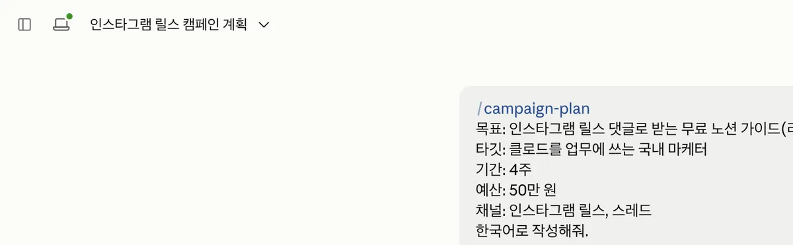
나온 기획서는 10개 섹션이었어요: 캠페인 개요 · 타깃 오디언스 · 핵심 메시지 · 채널 전략 · 주차별 콘텐츠 캘린더 · 필요 에셋 · 성과 지표 · 예산 배분 · 리스크와 대응 · 다음 단계.
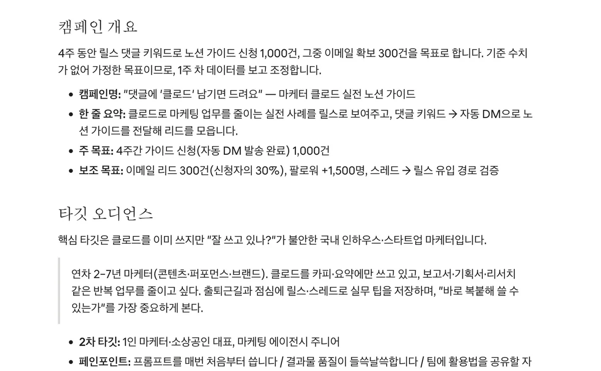
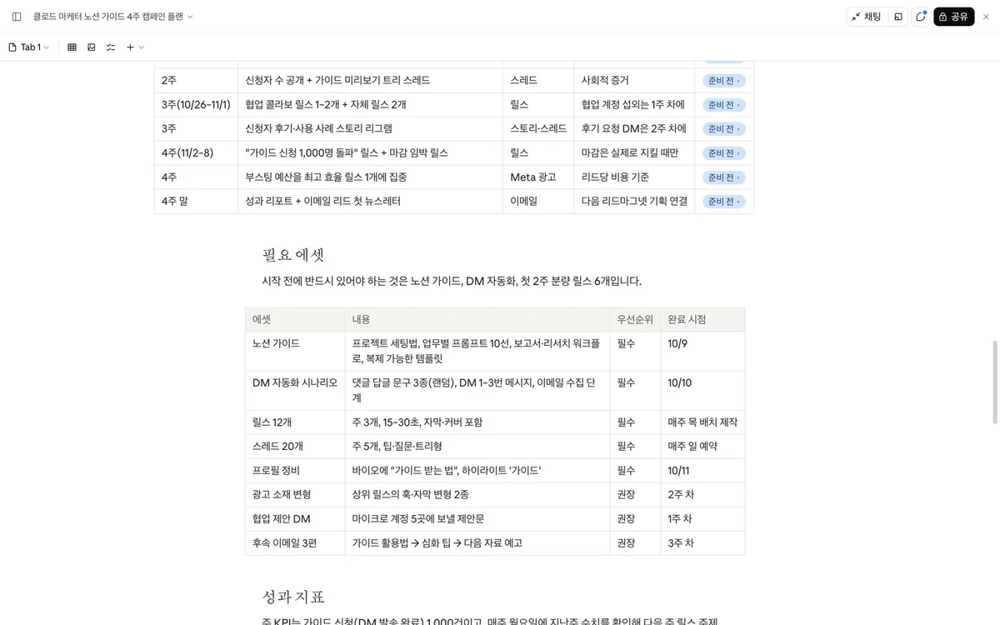
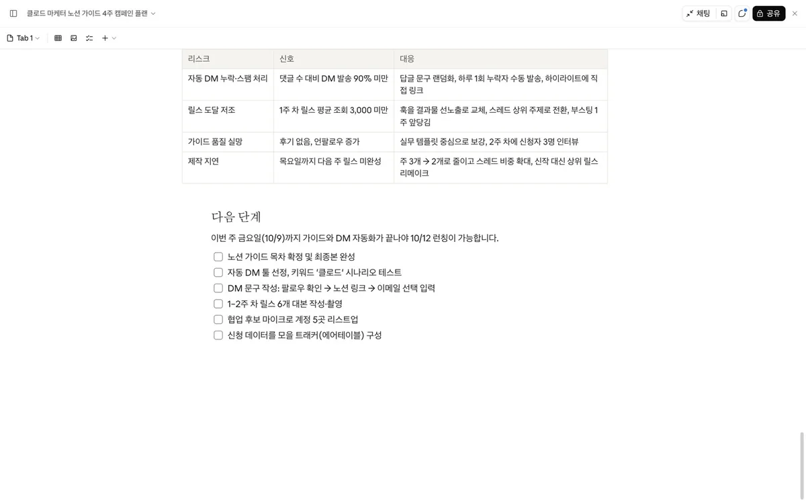
결과를 읽을 때 주의할 점 기획서 속 목표 숫자(신청 건수 등)는 Claude가 "기준 데이터 없이 잡은 가정"이라고 스스로 적어 둔 값이에요. 지난 성과 데이터를 같이 붙이면 훨씬 현실적인 숫자가 나와요.
7. 이어서 쓰기 — 기획부터 성과까지 한 대화에서
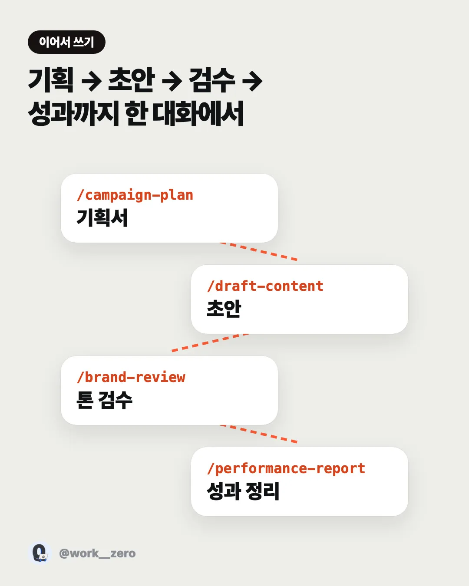
한 대화 안에서 앞 결과를 다음 명령의 재료로 쓰면 돼요.
/campaign-plan 으로 4주 캠페인 기획서를 먼저 써줘. (목표·타깃·기간·예산 입력)
기획서가 나오면 1주차 콘텐츠를 /draft-content 로 채널별 초안까지 써주고,
그 초안을 /brand-review 로 우리 브랜드 가이드 기준 검수해줘.
마지막으로 4주 뒤 /performance-report 에 쓸 지표 표 양식도 만들어줘.8. 자주 묻는 질문
무료로 쓸 수 있나요? 플러그인 자체는 공개돼 있지만(Apache-2.0), Claude에서 플러그인과 Cowork를 쓰려면 유료 플랜(Pro, Max, Team, Enterprise)이 필요해요.
한국어로 되나요? 네. 요청문 끝에 "한국어로 작성해줘"를 붙이면 한국어로 나와요. 위 실제 실행도 한국어로 받았어요.
/ 를 쳐도 명령이 안 보여요.
- 입력창 아래가 Cowork로 선택돼 있는지 확인해요
- 사용자 지정 화면에서 Marketing 토글이 켜져 있는지 확인해요
- 목록을 아래로 내리면 Marketing 구역이 따로 있어요
Canva나 Notion이랑도 연결되나요? 플러그인 커넥터 목록에 Canva, Figma, Notion, HubSpot 등이 들어 있어요. 연결하면 해당 도구의 자료를 읽거나 결과를 넣는 데 쓸 수 있어요. 각 도구 계정 연결은 따로 필요해요.
9. 공식 링크
- 플러그인 페이지: https://claude.com/plugins/marketing
- 플러그인 원본(README): https://github.com/anthropics/knowledge-work-plugins/tree/main/marketing
- 플러그인 사용 안내: https://support.claude.com/en/articles/13837440
- Cowork 사용 가능 플랜: https://support.claude.com/en/articles/13455879-use-claude-cowork-on-team-and-enterprise-plans
기준 날짜: 2026년 10월 5일 (설치 수·화면은 바뀔 수 있어요) 만든 사람: @work__zero — 클로드로 마케팅 일을 줄이는 방법을 릴스로 올려요. 팔로우해 두면 다음 편도 바로 받아볼 수 있어요.